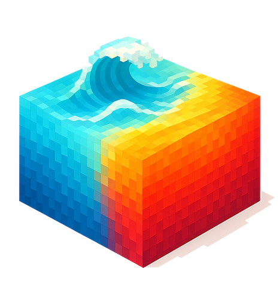
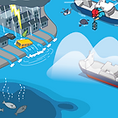
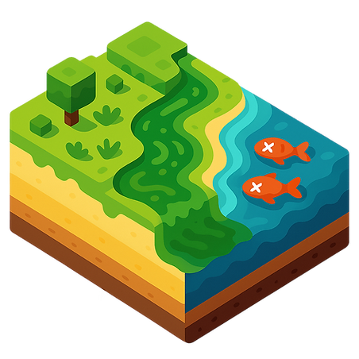

Physical oceanography
Sea Surface Temperature (SST),
Sea Surface Salinity (SSS)




Sea Surface Temperature (SST),
Sea Surface Salinity (SSS)

Coastal Water Quality,
Harmful Algal Blooms,
Blue carbon
Ocean-Fog
Last updated : 2026/09/07
Cho, H., Jung, S., Im, J., Kim, S.-H., & Bae, D. (2026). Global three-dimensional Chlorophyll-a retrieval via profile classification and structural parameterization. IEEE Transactions on Geoscience and Remote Sensing, 64.
Jung, S., Kim, S.-H., Jang, E., Lee, J., Han, D., & Im, J. (2025). Robust daily satellite sea surface salinity reconstruction using deep learning in low-salinity coastal region. Marine Pollution Bulletin, 221, 118462.
Jung, S., Im, J., & Han, D. (2025). PARAN: A novel physics-assisted reconstruction adversarial network using geostationary satellite data to reconstruct hourly sea surface temperatures. Remote Sensing of Environment, 323, 114749.
Sung, T., Kim, S.-H., Sim, S., Han, D., Jang, E., & Im, J. (2025). Expanding high-resolution sea surface salinity estimation from coastal seas to open oceans through the synergistic use of multi-source data with machine learning. International Journal of Applied Earth Observation and Geoinformation, 137, 104427.
Choo, M., Jung, S., Im, J., & Han, D. (2025). CARE-SST: Context-aware reconstruction diffusion model for sea surface temperature. ISPRS Journal of Photogrammetry and Remote Sensing, 220, 454–472.
Jang, E., Han, D., Im, J., Sung, T., & Kim, Y. J. (2024). Deep learning-based gap filling for near real-time seamless daily global sea surface salinity using satellite observations. International Journal of Applied Earth Observation and Geoinformation, 132, 104029.
Sim, S., Im, J., Jung, S., & Han, D. (2024). Improving Short-Term Prediction of Ocean Fog Using Numerical Weather Forecasts and Geostationary Satellite-Derived Ocean Fog Data Based on AutoML. Remote Sensing, 16(13), 2348.
Sim, S., & Im, J. (2023). Improved ocean–fog monitoring using Himawari-8 geostationary satellite data based on machine learning with SHAP-based model interpretation. IEEE Journal of Selected Topics in Applied Earth Observations and Remote Sensing, 16, 7819–7837.
Kim, Y. J., Han, D., Jang, E., Im, J., & Sung, T. (2023). Remote sensing of sea surface salinity: challenges and research directions. GIScience & Remote Sensing, 60(1).
Jang, E., Kim, Y. J., Im, J., Park, Y.-G., & Sung, T. (2022). Global sea surface salinity via the synergistic use of SMAP satellite and HYCOM data based on machine learning. Remote Sensing of Environment, 273, 112980.
Jung, S., Yoo, C., & Im, J. (2022). High-Resolution Seamless Daily Sea Surface Temperature Based on Satellite Data Fusion and Machine Learning over Kuroshio Extension. Remote Sensing, 14(3), 575.
Jang, E., Kim, Y., Im, J., & Park, Y. G. (2021). Improvement of SMAP sea surface salinity in river-dominated oceans using machine learning approaches. GIScience & Remote Sensing, 1-23.
Jung, S., Kim, Y., Park, S., & Im, J. (2020). Prediction of Sea Surface Temperature and Detection of Ocean Heat Wave in the South Sea of Korea Using Time-series Deep-learning Approaches. Korean Journal of Remote Sensing., 36(5), 1077-1093.
Jang, E., Im, J., Park, G. H., & Park, Y. G. (2017). Estimation of fugacity of carbon dioxide in the East Sea using in situ measurements and Geostationary Ocean Color Imager satellite data. Remote Sensing, 9(8), 821.
Kwon, Y. S., Jang, E., Im, J., Baek, S. H., Park, Y., & Cho, K. H. (2018). Developing data-driven models for quantifying Cochlodinium polykrikoides using the Geostationary Ocean Color Imager (GOCI). International Journal of Remote Sensing, 39(1), 68-83.
Pyo, J., Ha, S., Pachepsky, Y. A., Lee, H., Ha, R., Nam, G., ... & Cho, K. H. (2016). Chlorophyll-a concentration estimation using three difference bio-optical algorithms, including a correction for the low-concentration range: the case of the Yiam reservoir, Korea. Remote Sensing Letters, 7(5), 407-416.
Jang, E., Im, J., Ha, S., Lee, S., & Park, Y. G. (2016). Estimation of Water Quality Index for Coastal Areas in Korea Using GOCI Satellite Data Based on Machine Learning Approaches. Korean Journal of Remote Sensing, 32(3), 221-234.
Kim, Y. H., Im, J., Ha, H. K., Choi, J. K., & Ha, S. (2014). Machine learning approaches to coastal water quality monitoring using GOCI satellite data. GIScience & Remote Sensing, 51(2), 158-174.
{kind=link}
{kind=link}
{kind=link}
{kind=link}
{kind=link}
{kind=link}
{kind=link}
{kind=link}